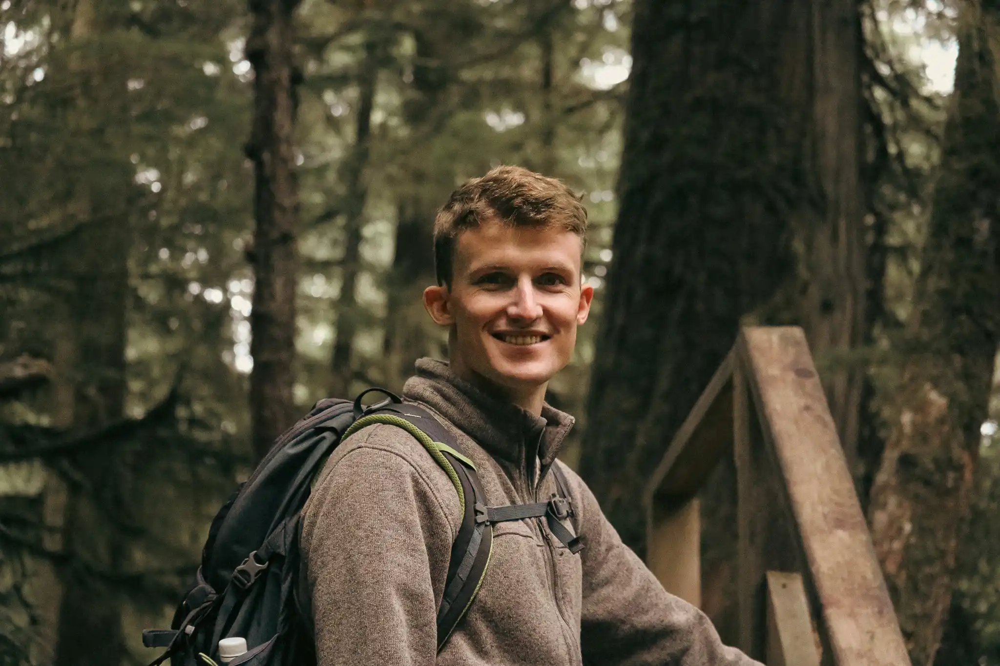

I’m a product designer focused on finding simple solutions to complex problems. Today, I solve problems for health practitioners and their patients at Fullscript.
If you would like to learn more about my user experience and design work, please send a note. I would be happy to hear from you.
Whether exploring the world or learning from a meaningful conversation, I approach life with passion, optimism, and a deep appreciation for its beauty. I care about designing detailed systems that help people spend their time well, with a focus on crafting extraordinary user interface design in web, mobile-web, and iOS experiences.
I studied experience design at the University of Waterloo’s Stratford School of Interaction Design and Business (2023). My notable experience includes a mix of design and research projects at the Charles Darwin Foundation in the Galápagos Islands (2017), the Sorbonne Université (2018), and Allure Systems (acq. by Farfetch) in Paris, France (2019).
After hours, I’m usually bouldering, tending to my garden, or tinkering on technical projects with Aditya Arora. Together, we ran a small design agency during the pandemic. When the Canadian winter hangs heavy, I like to plantasize (plan and / or fantasize) globe-trotting adventures.
Best,
Émile Patry Blenkiron